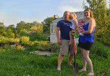
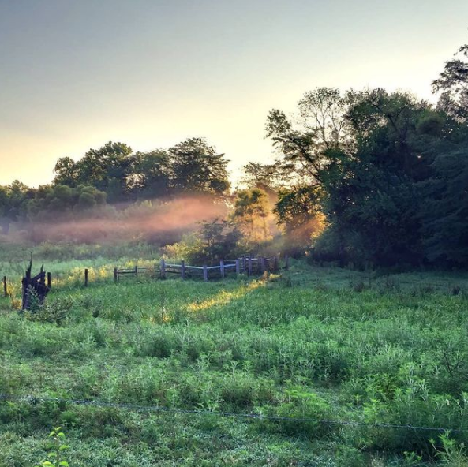

Second Breakfast Homestead is a working regenerative farm in southeast Indiana. We raise livestock, grow plant starters and perennials, and breed ornamental fish using methods inspired by natural systems. Rather than forcing production through heavy infrastructure, we try to work with the land, soil, water, and seasons as much as possible.
Our goal is simple: raise healthy animals, grow strong plants, and maintain living water systems while building soil and reducing reliance on industrial inputs. We're here to make this work in practice and share what we learn.


What We Offer
Livestock & Eggs. Pastured eggs from chickens with access to grass and natural foraging. We also raise pigs with access to pasture and wooded areas. Browse Livestock & Eggs →
Garden & Perennials. Vegetable starters, fruit and nut trees, pond plants, and soil-building perennials started in living soil and grown for real-world conditions. Browse Garden & Perennials →
Fish & Ponds. Ornamental fish (including medaka) bred in both outdoor ponds and indoor aquariums, along with supplies and guidance for building your own living water systems. Browse Fish & Ponds →
Contact
Questions, custom orders, or want to talk systems? Reach out at SecondBreakfastRanch@gmail.com or use the inquiry form. We read every message and usually reply within a day or two.